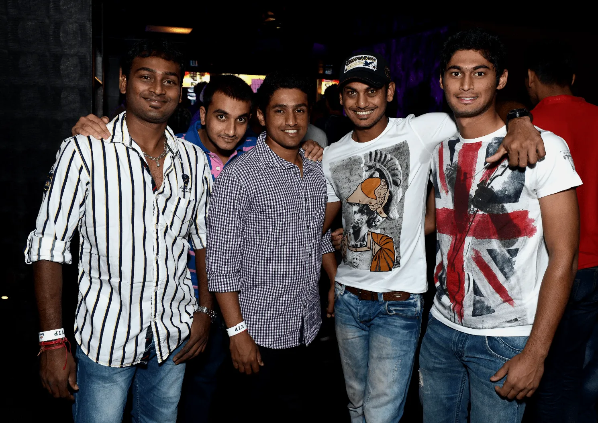
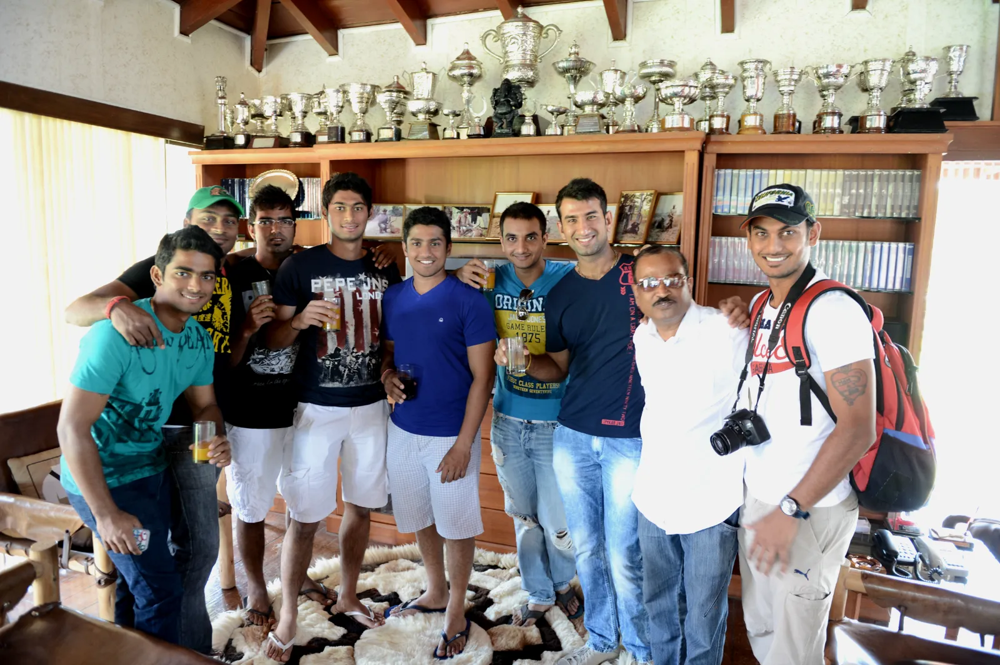
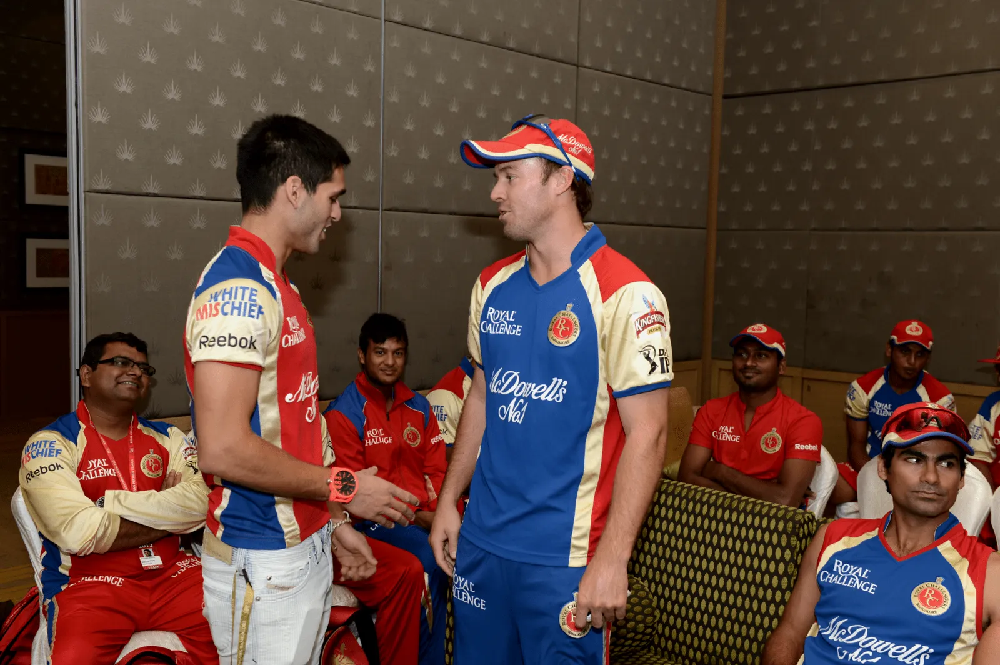
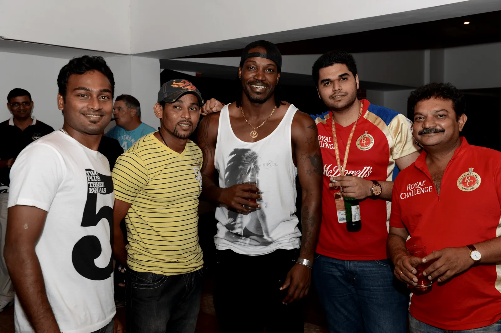
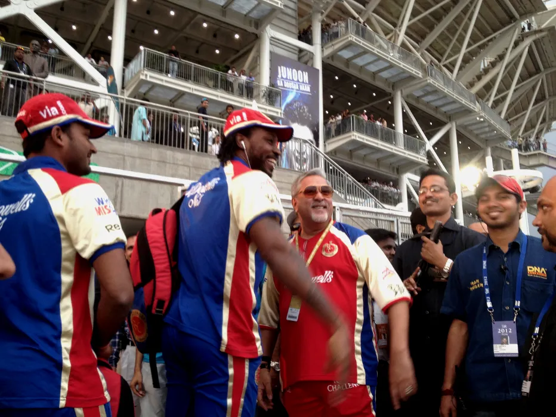
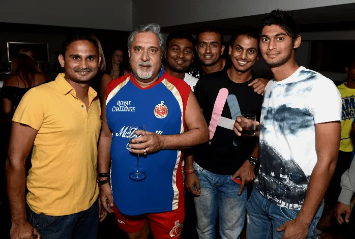

The Architect · Built From The Inside
ELITE
ELITE
FRANCHISE STANDARDS
IPL 2012, Royal Challengers Bangalore — 5 innings, 161 runs, an average around 40. An uncapped player's shot at the highest level of franchise cricket.
Experience playing and coaching within the RCB system sets the baseline for our academy. We train to the exact standards demanded by ICC and BCCI certified environments.
Roll 01
Inside The Ring






Autoplay
FRAME 01 / 07